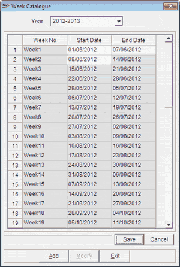

The Week Catalogue window is displayed.

Year: Select the year for which the weeks are to be catalogued.
Week No.: Displays the numbers of the weeks.
Start Date: Displays the start date of the corresponding week. The first and the second start dates can be modified.
End Date: Displays the end date of the week. The first and the last end dates can be modified.